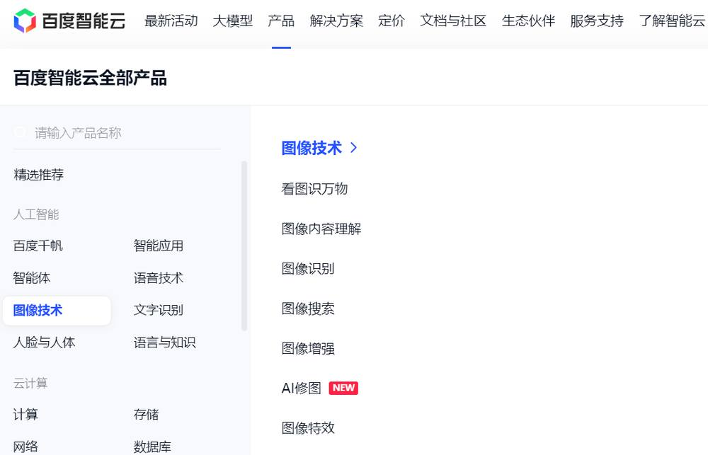
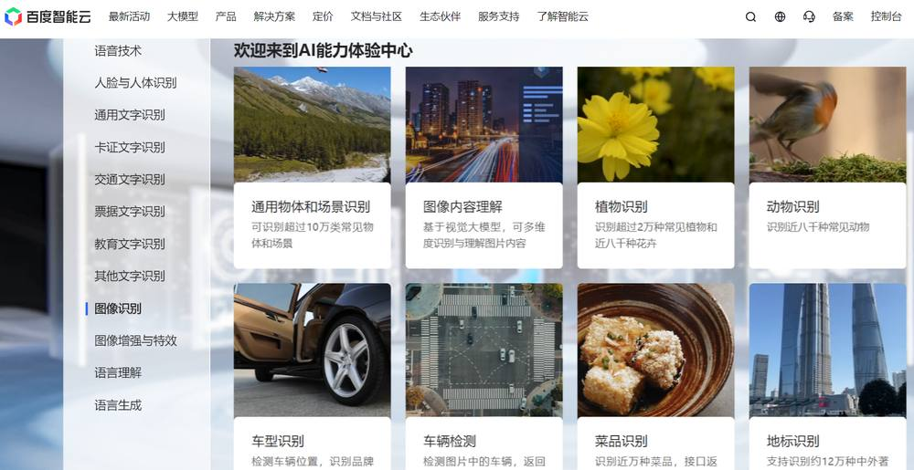
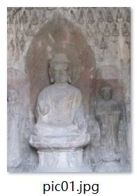
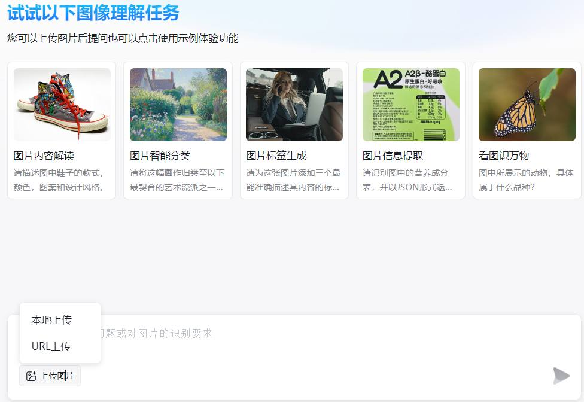
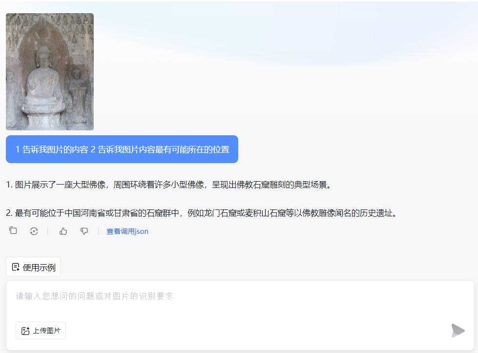
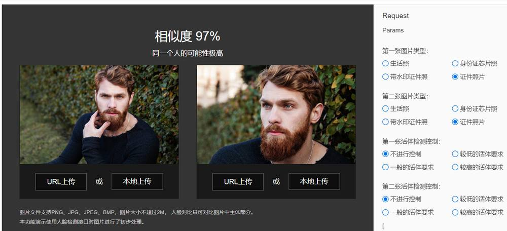
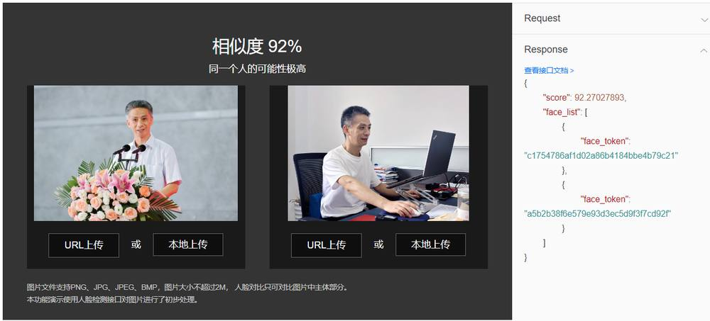

第 1 页 · 3 课堂实践
3 课堂实践

模块4：体验计算机视觉


第 2 页 · 这是哪座城市？

这是哪座城市？
第 3 页 · 认识百度智能云
认识百度智能云

第 4 页 · 认识讯飞开放平台
认识讯飞开放平台
第 5 页 · 项目1：智能定位照片中的地点
项目1：智能定位照片中的地点
怎样精准地告诉你照片中你曾经去过的地方是哪儿？
1.实践任务描述
第 6 页 · 项目1：智能定位照片中的地点
项目1：智能定位照片中的地点
2.解决方案设计

第 7 页 · 任务1—准备待识别的照片
任务1—准备待识别的照片
项目1：智能定位照片中的地点
3.实践任务实施


第 8 页 · 项目1：智能定位照片中的地点
项目1：智能定位照片中的地点
3.实践任务实施
任务2—上传照片并输入识别要求

第 9 页 · 项目1：智能定位照片中的地点
项目1：智能定位照片中的地点

大家去找一找，还有哪些AI工具能将图片的内容定位？
思考
第 10 页 · 是否为同一个人？

是否为同一个人？
第 11 页 · 认识百度智能云的人脸对比
认识百度智能云的人脸对比
第 12 页 · 项目2：对比两张人像是否为同一人
项目2：对比两张人像是否为同一人
核验一张图片中的人物与预存图片中的已知人物是否为同一个人。
1.实践任务描述
第 13 页 · 项目2：直播讲稿合成语音
项目2：直播讲稿合成语音
2.解决方案设计
第 14 页 · 项目2：直播讲稿合成语音
项目2：直播讲稿合成语音
任务1—设置检测参数并上传图片
3.实践任务实施

第 15 页 · 项目2：直播讲稿合成语音
项目2：直播讲稿合成语音
任务1—设置检测参数并上传图片
3.实践任务实施
第 16 页 · 项目2：直播讲稿合成语音
项目2：直播讲稿合成语音
3.实践任务实施
任务2—验证对比结果

第 17 页 · 学生分享及教师点评
学生分享及教师点评

| 评价要点 | 分值 | 计分 | 教师点评 |
| 1、百度智能云还有哪些与计算机视觉相关的技术？ | 15 | 主动了解百度智能云 | |
| 2、图像识别可用于哪些应用场景？ | 15 | 主动思考，创新应用 | |
| 3、你认为，如今的人脸识别技术是否存在应用风险？ | 30 | 积极思考、风险意识 | |
| 4、如何结合场景识别与大模型来提高图片位置的定位精度？ | 10 | 善于思考，提价值问题 | |
| 5、还有哪些AI工具可展示计算机视觉应用？ | 20 | 问题驱动，求解答案 | |
| 6、其它（含逻辑、表情、主动、清晰、流畅、新意等） | 0-10 | 能说、会思、质疑、精技 |
第 18 页 · 子任务3：语音提示处理
子任务3：语音提示处理

视通万物
以智赋行